重新装了系统，优化一下目录结构，然后深入理解一下FastDFS，而不是简单的安装使用。
介绍
简介
FastDFS 是一个开源的高性能分布式文件系统（DFS）。 它的主要功能包括：文件存储，文件同步和文件访问，以及高容量和负载平衡。主要解决了海量数据存储问题，特别适合以中小文件（建议范围：4KB < file_size <500MB）为载体的在线服务。对文件进行管理，功能包括：文件存储、文件同步、文件访问（文件上传、文件下载）等，解决了大容量存储和负载均衡的问题。特别适合以文件为载体的在线服务，如相册网站、视频网站等等。
FastDFS 系统有三个角色：跟踪服务器(Tracker Server)、存储服务器(Storage Server)和客户端(Client)。
Tracker Server
主要做调度工作，起到均衡的作用；负责管理所有的 storage server和 group，每个 storage 在启动后会连接 Tracker，告知自己所属 group 等信息，并保持周期性心跳。tracker根据storage的心跳信息，建立group==>[storage serverlist]的映射表。Tracker需要管理的元信息很少，会全部存储在内存中；另外tracker上的元信息都是由storage汇报的信息生成的，本身不需要持久化任何数据，这样使得tracker非常容易扩展，直接增加tracker机器即可扩展为tracker cluster来服务，cluster里每个tracker之间是完全对等的，所有的tracker都接受stroage的心跳信息，生成元数据信息来提供读写服务。
Storage Server
主要提供容量和备份服务；以 group 为单位，每个 group 内可以有多台 storage server，数据互为备份。以group为单位组织存储能方便的进行应用隔离、负载均衡、副本数定制（group内storage server数量即为该group的副本数），比如将不同应用数据存到不同的group就能隔离应用数据，同时还可根据应用的访问特性来将应用分配到不同的group来做负载均衡；缺点是group的容量受单机存储容量的限制，同时当group内有机器坏掉时，数据恢复只能依赖group内地其他机器，使得恢复时间会很长。
group内每个storage的存储依赖于本地文件系统，storage可配置多个数据存储目录，比如有10块磁盘，分别挂载在/data/disk1-/data/disk10，则可将这10个目录都配置为storage的数据存储目录。storage接受到写文件请求时，会根据配置好的规则选择其中一个存储目录来存储文件。为了避免单个目录下的文件数太多，在storage第一次启动时，会在每个数据存储目录里创建2级子目录，每级256个，总共65536个文件，新写的文件会以hash的方式被路由到其中某个子目录下，然后将文件数据作为本地文件存储到该目录中。
Client
客户端，上传下载数据的服务器，也就是我们自己的项目所部署在的服务器。每个客户端服务器都需要安装Nginx
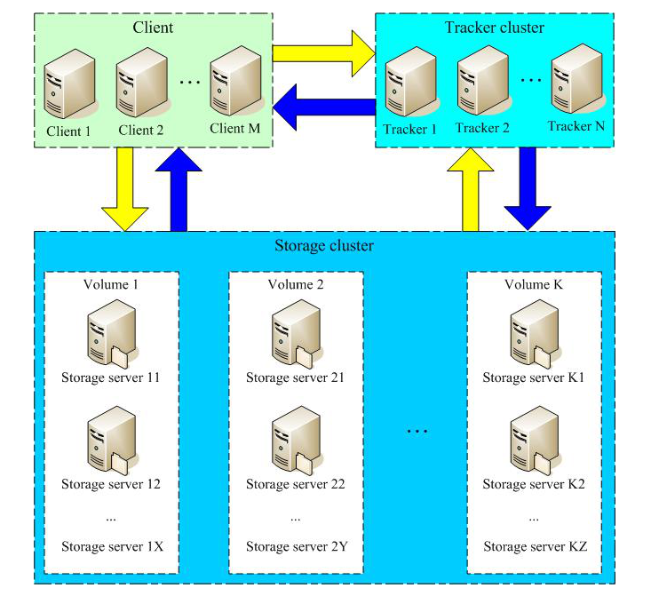
存储策略
为了支持大容量，存储节点（服务器）采用了分卷（或分组）的组织方式。存储系统由一个或多个卷组成，卷与卷之间的文件是相互独立的，所有卷的文件容量累加就是整个存储系统中的文件容量。一个卷可以由一台或多台存储服务器组成，一个卷下的存储服务器中的文件都是相同的，卷中的多台存储服务器起到了冗余备份和负载均衡的作用。
在卷中增加服务器时，同步已有的文件由系统自动完成，同步完成后，系统自动将新增服务器切换到线上提供服务。当存储空间不足或即将耗尽时，可以动态添加卷。只需要增加一台或多台服务器，并将它们配置为一个新的卷，这样就扩大了存储系统的容量。
FastDFS的上传过程
FastDFS向使用者提供基本文件访问接口，比如upload、download、append、delete等，以客户端库的方式提供给用户使用。
Storage Server会定期的向Tracker Server发送自己的存储信息。当Tracker Server Cluster中的Tracker Server不止一个时，各个Tracker之间的关系是对等的，所以客户端上传时可以选择任意一个Tracker。
当Tracker收到客户端上传文件的请求时，会为该文件分配一个可以存储文件的group，当选定了group后就要决定给客户端分配group中的哪一个storage server。当分配好storage server后，客户端向storage发送写文件请求，storage将会为文件分配一个数据存储目录。然后为文件分配一个fileid，最后根据以上的信息生成文件名存储文件。
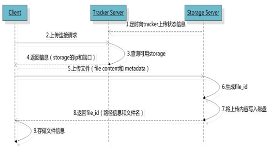
FastDFS的文件同步
写文件时，客户端将文件写至group内一个storage server即认为写文件成功，storage server写完文件后，会由后台线程将文件同步至同group内其他的storage server。
每个storage写文件后，同时会写一份binlog，binlog里不包含文件数据，只包含文件名等元信息，这份binlog用于后台同步，storage会记录向group内其他storage同步的进度，以便重启后能接上次的进度继续同步；进度以时间戳的方式进行记录，所以最好能保证集群内所有server的时钟保持同步。
storage的同步进度会作为元数据的一部分汇报到tracker上，tracke在选择读storage的时候会以同步进度作为参考。
FastDFS的文件下载
客户端uploadfile成功后，会拿到一个storage生成的文件名，接下来客户端根据这个文件名即可访问到该文件。
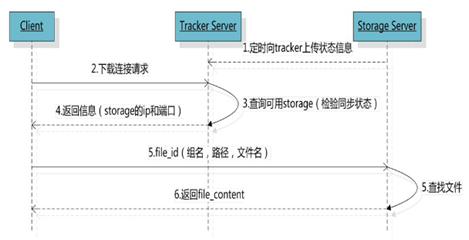
跟upload file一样，在downloadfile时客户端可以选择任意tracker server。tracker发送download请求给某个tracker，必须带上文件名信息，tracke从文件名中解析出文件的group、大小、创建时间等信息，然后为该请求选择一个storage用来服务读请求。
性能方案
安装
我重新装了系统centos server 8.1网上很多的安装环境都是在centos7单机完成的，质量良莠不齐，我参考了很多资料+实战经验，详细整理出安装步骤(安装时间是2020年6月16日，所有环境和软件都使用当前最新版本)
前期准备
我把所有的安装包下载到/home/zhangkx/fastdfs下。下文中的base路径(base_path)都是指的/home/zhangkx/fastdfs
先做一件事，修改hosts，将文件服务器的ip与域名映射(单机TrackerServer环境)，因为后面很多配置里面都需要去配置服务器地址，ip变了，就只需要修改hosts即可。
# vim /etc/hosts
增加如下一行，这是我的IP
192.168.51.128 file.zhangkx.com
如果要本机访问虚拟机，在C:\Windows\System32\drivers\etc\hosts中同样增加一行下载安装 libfastcommon
libfastcommon是从 FastDFS 和 FastDHT 中提取出来的公共 C 函数库，基础环境，安装即可 。
- 下载libfastcommon(下载都推荐去github上下载release)
# wget https://github.com/happyfish100/libfastcommon/archive/V1.0.43.tar.gz- 解压
# tar -zxvf V1.0.43.tar.gz
# cd libfastcommon-1.0.43- 编译、安装
# ./make.sh
# ./make.sh install- libfastcommon.so 安装到了/usr/lib64/libfastcommon.so，但是FastDFS主程序设置的lib目录是/usr/local/lib，所以需要创建软链接。（不软连接就要改源码）
# ln -s /usr/lib64/libfastcommon.so /usr/local/lib/libfastcommon.so
# ln -s /usr/lib64/libfastcommon.so /usr/lib/libfastcommon.so
# ln -s /usr/lib64/libfdfsclient.so /usr/local/lib/libfdfsclient.so
# ln -s /usr/lib64/libfdfsclient.so /usr/lib/libfdfsclient.so 下载安装FastDFS
- 下载FastDFS(下载都推荐去github上下载release)
# wget https://github.com/happyfish100/fastdfs/archive/V6.06.tar.gz- 解压
# tar -zxvf V6.06.tar.gz
# cd fastdfs-6.06- 编译、安装
# ./make.sh
# ./make.sh install- 默认安装方式安装后的相应文件与目录
- 服务脚本：
/etc/init.d/fdfs_storaged
/etc/init.d/fdfs_tracker- 配置文件（这三个是作者给的样例配置文件） :
/etc/fdfs/client.conf.sample
/etc/fdfs/storage.conf.sample
/etc/fdfs/tracker.conf.sample- 命令工具在 /usr/bin/ 目录下：
fdfs_appender_test
fdfs_appender_test1
fdfs_append_file
fdfs_crc32
fdfs_delete_file
fdfs_download_file
fdfs_file_info
fdfs_monitor
fdfs_storaged
fdfs_test
fdfs_test1
fdfs_trackerd
fdfs_upload_appender
fdfs_upload_file
stop.sh
restart.sh - FastDFS 服务脚本设置的 bin 目录是 /usr/local/bin， 但实际命令安装在 /usr/bin/ 下。
两种方式：
——》 一是修改FastDFS 服务脚本中相应的命令路径，也就是把 /etc/init.d/fdfs_storaged 和 /etc/init.d/fdfs_tracker 两个脚本中的 /usr/local/bin 修改成 /usr/bin。
# vim fdfs_trackerd
使用查找替换命令进统一修改:%s+/usr/local/bin+/usr/bin
# vim fdfs_storaged
使用查找替换命令进统一修改:%s+/usr/local/bin+/usr/bin——》 二是建立 /usr/bin 到 /usr/local/bin 的软链接，我是用这种方式。
# ln -s /usr/bin/fdfs_trackerd /usr/local/bin
# ln -s /usr/bin/fdfs_storaged /usr/local/bin
# ln -s /usr/bin/stop.sh /usr/local/bin
# ln -s /usr/bin/restart.sh /usr/local/bin配置FastDFS跟踪器(Tracker)
配置文件详细说明参考我会再文末贴出->
- 进入 /etc/fdfs，复制 FastDFS 跟踪器样例配置文件 tracker.conf.sample，并重命名为 tracker.conf。
# cd /etc/fdfs
# cp tracker.conf.sample tracker.conf
# vim tracker.conf- 编辑tracker.conf ，标红的需要修改下，其它的默认即可。
# 配置文件是否不生效，false 为生效
disabled=false
# 提供服务的端口
port=22122
# Tracker 数据和日志目录地址(根目录必须存在,子目录会自动创建)
base_path=/home/zhangkx/fastdfs/tracker
# HTTP 服务端口
http.server_port=80- 创建tracker基础数据目录，即base_path对应的目录
# mkdir -p /home/zhangkx/fastdfs/tracker- 防火墙中打开跟踪端口（默认的22122）
# vim /etc/sysconfig/firewelld
添加如下端口行：
-A INPUT -m state --state NEW -m tcp -p tcp --dport 22122 -j ACCEPT
重启防火墙：
# service firewelld restart
或者运行
# firewall-cmd --add-port=22122/tcp --permanent
重启防火墙：
# service firewelld restart这个防火墙其实直接关掉就可，非要打开的话最好是使用下面哪种方法，上面那方法是针对centos7的iptables，在升级到centos8，已经有变
- 启动Tracker
初次成功启动，会在/home/zhangkx/fastdfs/tracker/ (配置的base_path)下创建 data、logs 两个目录。
可以用这种方式启动
# /etc/init.d/fdfs_trackerd start
也可以用这种方式启动，前提是上面创建了软链接，后面都用这种方式
# service fdfs_trackerd start查看 FastDFS Tracker 是否已成功启动 ，22122端口正在被监听，则算是Tracker服务安装成功。（有22122就可以了）
# netstat -unltp|grep fdfs关闭Tracker命令：
# service fdfs_trackerd stop- 设置Tracker开机启动
# chkconfig fdfs_trackerd on
或者：
# vim /etc/rc.d/rc.local
加入配置：
/etc/init.d/fdfs_trackerd start - tracker server 目录及文件结构
Tracker服务启动成功后，会在base_path下创建data、logs两个目录。目录结构如下：
${base_path}
|__data
| |__storage_groups.dat：存储分组信息
| |__storage_servers.dat：存储服务器列表
|__logs
| |__trackerd.log： tracker server 日志文件 配置 FastDFS 存储 (Storage)
- 进入 /etc/fdfs 目录，复制 FastDFS 存储器样例配置文件 storage.conf.sample，并重命名为 storage.conf
# cd /etc/fdfs
# cp storage.conf.sample storage.conf# vim storage.conf- 编辑storage.conf
# 配置文件是否不生效，false 为生效
disabled=false
# 指定此 storage server 所在 组(卷)
group_name=group1
# storage server 服务端口
port=23000
# 心跳间隔时间，单位为秒 (这里是指主动向 tracker server 发送心跳)
heart_beat_interval=30
# Storage 数据和日志目录地址(根目录必须存在，子目录会自动生成)
base_path=/home/zhangkx/fastdfs/storage
# 存放文件时 storage server 支持多个路径。这里配置存放文件的基路径数目，通常只配一个目录。
store_path_count=1
# 逐一配置 store_path_count 个路径，索引号基于 0。
# 如果不配置 store_path0，那它就和 base_path 对应的路径一样。
store_path0=/home/zhangkx/fastdfs/file
# FastDFS 存储文件时，采用了两级目录。这里配置存放文件的目录个数。
# 如果本参数只为 N（如： 256），那么 storage server 在初次运行时，会在 store_path 下自动创建 N * N 个存放文件的子目录。
subdir_count_per_path=256
# tracker_server 的列表 ，会主动连接 tracker_server
# 有多个 tracker server 时，每个 tracker server 写一行
tracker_server=file.ljzsg.com:22122# 允许系统同步的时间段 (默认是全天) 。一般用于避免高峰同步产生一些问题而设定。sync_start_time=00:00sync_end_time=23:59
# 访问端口
http.server_port=80- 创建Storage基础数据目录，对应base_path目录
# mkdir -p /home/zhangkx/fastdfs/storage
# 这是配置的store_path0路径
# mkdir -p /home/zhangkx/fastdfs/file- 防火墙中打开存储器端口（默认的 23000）
运行
# firewall-cmd --add-port=23000/tcp --permanent
重启防火墙：
# service firewelld restart- 启动 Storage
启动Storage前确保Tracker是启动的。初次启动成功，会在 /home/zhangkx/fastdfs/storage 目录下创建 data、 logs 两个目录。
可以用这种方式启动
# /etc/init.d/fdfs_storaged start
也可以用这种方式，后面都用这种
# service fdfs_storaged start查看 Storage 是否成功启动，23000 端口正在被监听，就算 Storage 启动成功。
# netstat -unltp|grep fdfs关闭Storage命令：
# service fdfs_storaged stop查看Storage和Tracker是否在通信：
/usr/bin/fdfs_monitor /etc/fdfs/storage.conf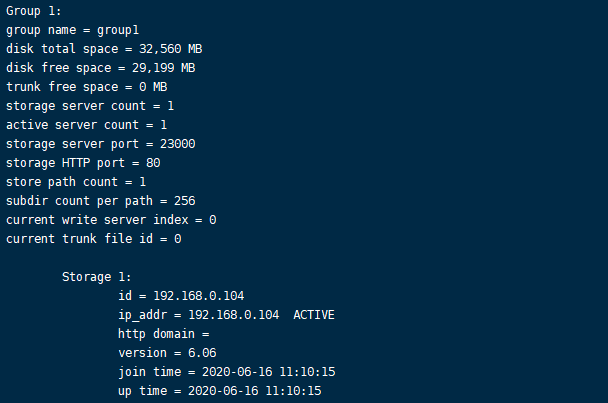
里面storage1中 ip_addr=…… ACTIVE就表示正在通信
- 设置 Storage 开机启动
# chkconfig fdfs_storaged on
或者：
# vim /etc/rc.d/rc.local
加入配置：
/etc/init.d/fdfs_storaged start- Storage 目录
同 Tracker，Storage 启动成功后，在base_path 下创建了data、logs目录，记录着 Storage Server 的信息。
在 store_path0 目录下，创建了N*N个子目录：
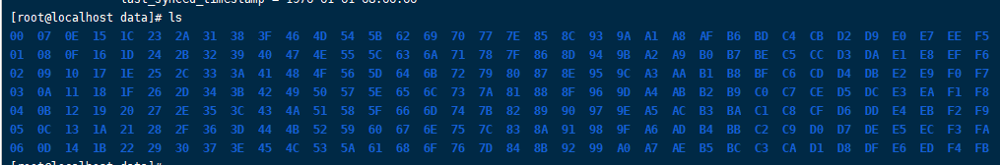
文件上传测试
- 修改 Tracker 服务器中的客户端配置文件
# cd /etc/fdfs
# cp client.conf.sample client.conf
# vim client.conf修改如下配置即可，其它默认。
# Client 的数据和日志目录
base_path=/home/zhangkx/fastdfs/client
# Tracker端口
tracker_server=file.zhangkx.com:22122上传测试
在linux内部执行如下命令上传 namei.jpeg 图片
# /usr/bin/fdfs_upload_file /etc/fdfs/client.conf namei.jpeg上传成功后返回文件ID号：group1/M00/00/00/wKgz6lnduTeAMdrcAAEoRmXZPp870.jpeg
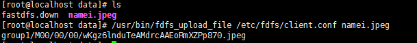
返回的文件ID由group、存储目录、两级子目录、fileid、文件后缀名（由客户端指定，主要用于区分文件类型）拼接而成。
安装Nginx
上面将文件上传成功了，但我们无法下载。因此安装Nginx作为服务器以支持Http方式访问文件。同时，后面安装FastDFS的Nginx模块也需要Nginx环境。
Nginx只需要安装到StorageServer所在的服务器即可，用于访问文件。我这里由于是单机，TrackerServer和StorageServer在一台服务器上。
安装nginx所需环境
- gcc 安装
# yum install gcc-c++- PCRE pcre-devel 安装
# yum install -y pcre pcre-devel- zlib 安装
# yum install -y zlib zlib-devel- OpenSSL 安装
# yum install -y openssl openssl-devel安装Nginx
- 下载nginx(下载都推荐去github上下载release)
# wget -c https://nginx.org/download/nginx-1.19.0.tar.gz- 解压
# tar -zxvf nginx-1.19.0.tar.gz
# cd nginx-1.19.0- 使用默认配置
# ./configure- 编译、安装
# make
# make install- 启动nginx
# cd /usr/local/nginx/sbin/
# ./nginx
其它命令
# ./nginx -s stop
# ./nginx -s quit
# ./nginx -s reload- 设置开机启动
# vim /etc/rc.local
添加一行：
/usr/local/nginx/sbin/nginx# 设置执行权限# chmod 755 rc.local- 查看nginx的版本及模块
/usr/local/nginx/sbin/nginx -V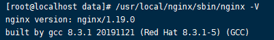
- 防火墙中打开Nginx端口（默认的 80）
添加后就能在本机使用80端口访问了。
运行
# firewall-cmd --add-port=22122/tcp --permanent
重启防火墙：
# service firewelld restart
直接把防火墙关了也行
# service firewelld stop配置Nginx
配置nginx->简单的测试访问文件
- 修改nginx.conf
# vim /usr/local/nginx/conf/nginx.conf
# 添加如下行，将 /group1/M00 映射到 /home/zhangkx/fastdfs/file/data
location /group1/M00 {
alias /home/zhangkx/fastdfs/file/data;
}# 重启nginx# /usr/local/nginx/sbin/nginx -s reload- 在浏览器访问之前上传的图片、成功。
http://file.zhangkx.com/group1/M00/00/00/wKgz6lnduTeAMdrcAAEoRmXZPp870.jpeg
FastDFS 配置 Nginx 模块
安装配置Nginx模块
- fastdfs-nginx-module 模块说明
FastDFS 通过 Tracker 服务器，将文件放在 Storage 服务器存储， 但是同组存储服务器之间需要进行文件复制， 有同步延迟的问题。
假设 Tracker 服务器将文件上传到了 192.168.51.128，上传成功后文件 ID已经返回给客户端。
此时 FastDFS 存储集群机制会将这个文件同步到同组存储 192.168.51.129，在文件还没有复制完成的情况下，客户端如果用这个文件 ID 在 192.168.51.129 上取文件,就会出现文件无法访问的错误。
而 fastdfs-nginx-module 可以重定向文件链接到源服务器取文件，避免客户端由于复制延迟导致的文件无法访问错误。
- 下载 fastdfs-nginx-module、解压(下载都推荐去github上下载release)
# wget https://github.com/happyfish100/fastdfs-nginx-module/archive/fastdfs-nginx-module1.22.tar.gz
# 解压
# tar -zxvf fastdfs-nginx-module1.22.tar.gz fastdfs-nginx-module-master- 配置Nginx
在nginx中添加模块
# 先停掉nginx服务# /usr/local/nginx/sbin/nginx -s stop进入解压包目录
# cd {base_path}/nginx-1.19.0/
# 添加模块
# ./configure --add-module={base_path}/fastdfs-nginx-module-master/src
重新编译、安装
# make && make install- 查看Nginx的模块
# /usr/local/nginx/sbin/nginx -V有下面这个就说明添加模块成功
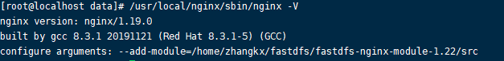
- 复制 fastdfs-nginx-module 源码中的配置文件到/etc/fdfs 目录， 并修改
# cd {base_path}/fastdfs-nginx-module-master/src
# cp mod_fastdfs.conf /etc/fdfs/修改如下配置，其它默认
# 连接超时时间connect_timeout=10
# Tracker Server
tracker_server=file.ljzsg.com:22122
# StorageServer 默认端口
storage_server_port=23000
# 如果文件ID的uri中包含/group**，则要设置为true
url_have_group_name = true
# Storage 配置的store_path0路径，必须和storage.conf中的一致
store_path0=/home/zhangkx/fastdfs/file- 复制 FastDFS 的部分配置文件到/etc/fdfs 目录
# cd {base_path}/fastdfs-6.06/conf/
# cp anti-steal.jpg http.conf mime.types /etc/fdfs/- 配置nginx，修改nginx.conf
# vim /usr/local/nginx/conf/nginx.conf修改配置，其它的默认
在80端口下添加fastdfs-nginx模块
location ~/group([0-9])/M00 {
ngx_fastdfs_module;
}
注意：
listen 80 端口值是要与 /etc/fdfs/storage.conf 中的 http.server_port=80 (前面改成80了)相对应。如果改成其它端口，则需要统一，同时在防火墙中打开该端口。
location 的配置，如果有多个group则配置location ~/group([0-9])/M00 ，没有则不用配group。
- 在/home/zhangkx/fastdfs/file 文件存储目录下创建软连接，将其链接到实际存放数据的目录，这一步可以省略。
# ln -s /home/zhangkx/fastdfs/file/data/ /home/zhangkx/fastdfs/file/data/M00 - 启动nginx
# /usr/local/nginx/sbin/nginx打印处如下就算配置成功
- 在地址栏访问。
能下载文件就算安装成功。注意和第三点中直接使用nginx路由访问不同的是，这里配置 fastdfs-nginx-module 模块，可以重定向文件链接到源服务器取文件。
http://file.zhangkx.com/group1/M00/00/00/wKgz6lnduTeAMdrcAAEoRmXZPp870.jpeg
最终部署结构图(盗的图)：可以按照下面的结构搭建环境。
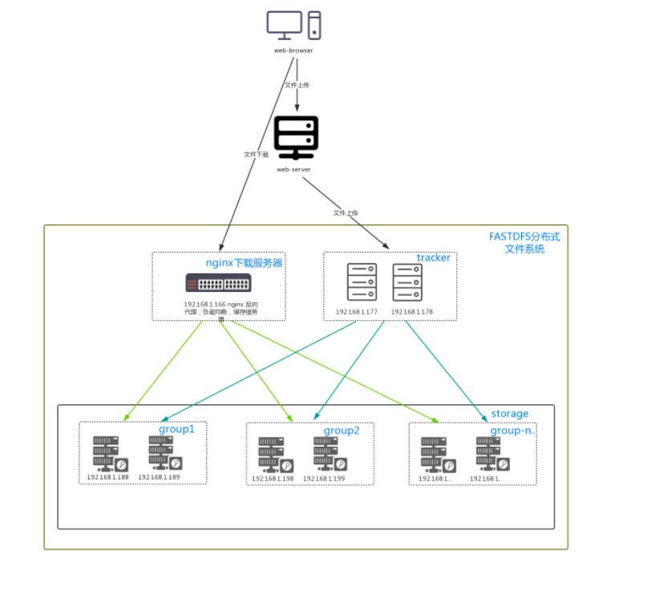
使用
java客户端
余庆先生提供了一个Java客户端，但是作为一个C程序员，写的java代码可想而知。而且已经很久不维护了。
这里推荐一个开源的FastDFS客户端，支持最新的SpringBoot2.0。
配置使用极为简单，支持连接池，支持自动生成缩略图，狂拽酷炫吊炸天啊，有木有。
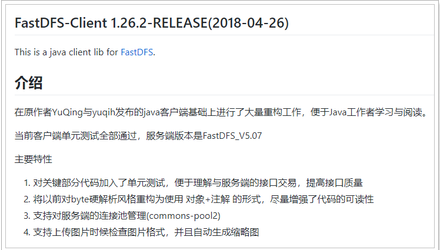
接下来，我们就用FastDFS改造leyou-upload工程。
引入依赖
在父工程中，我们已经管理了依赖，版本为：
<fastDFS.client.version>1.26.2</fastDFS.client.version>因此，这里我们直接在taotao-upload工程的pom.xml中引入坐标即可：
<dependency>
<groupId>com.github.tobato</groupId>
<artifactId>fastdfs-client</artifactId>
</dependency>引入配置类
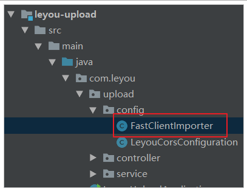
纯java配置：
@Configuration
@Import(FdfsClientConfig.class)
// 解决jmx重复注册bean的问题
@EnableMBeanExport(registration = RegistrationPolicy.IGNORE_EXISTING)
public class FastClientImporter {
}编写FastDFS属性
在application.yml配置文件中追加如下内容：
fdfs:
so-timeout: 1501 # 超时时间
connect-timeout: 601 # 连接超时时间
thumb-image: # 缩略图
width: 60
height: 60
tracker-list: # tracker地址：你的虚拟机服务器地址+端口（默认是22122）
- 192.168.56.101:221223.5.4.配置hosts
将来通过域名：image.leyou.com这个域名访问fastDFS服务器上的图片资源。所以，需要代理到虚拟机地址：
配置hosts文件，使image.leyou.com可以访问fastDFS服务器
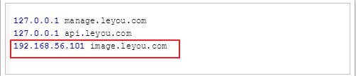
测试
创建测试类：
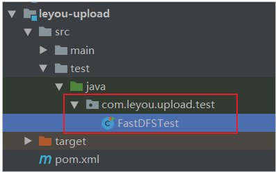
把以下内容copy进去：
@SpringBootTest
@RunWith(SpringRunner.class)
public class FastDFSTest {
@Autowired
private FastFileStorageClient storageClient;
@Autowired
private ThumbImageConfig thumbImageConfig;
@Test
public void testUpload() throws FileNotFoundException {
// 要上传的文件
File file = new File("C:\\Users\\joedy\\Pictures\\xbx1.jpg");
// 上传并保存图片，参数：1-上传的文件流 2-文件的大小 3-文件的后缀 4-可以不管他
StorePath storePath = this.storageClient.uploadFile(
new FileInputStream(file), file.length(), "jpg", null);
// 带分组的路径
System.out.println(storePath.getFullPath());
// 不带分组的路径
System.out.println(storePath.getPath());
}
@Test
public void testUploadAndCreateThumb() throws FileNotFoundException {
File file = new File("C:\\Users\\joedy\\Pictures\\xbx1.jpg");
// 上传并且生成缩略图
StorePath storePath = this.storageClient.uploadImageAndCrtThumbImage(
new FileInputStream(file), file.length(), "png", null);
// 带分组的路径
System.out.println(storePath.getFullPath());
// 不带分组的路径
System.out.println(storePath.getPath());
// 获取缩略图路径
String path = thumbImageConfig.getThumbImagePath(storePath.getPath());
System.out.println(path);
}
}结果：
group1/M00/00/00/wKg4ZVsWl5eAdLNZAABAhya2V0c424.jpg
M00/00/00/wKg4ZVsWl5eAdLNZAABAhya2V0c424.jpggroup1/M00/00/00/wKg4ZVsWmD-ARnWiAABAhya2V0c772.png
M00/00/00/wKg4ZVsWmD-ARnWiAABAhya2V0c772.png
M00/00/00/wKg4ZVsWmD-ARnWiAABAhya2V0c772_60x60.png访问第二组第一个路径：
访问最后一个路径（缩略图路径），注意加组名（group1）：
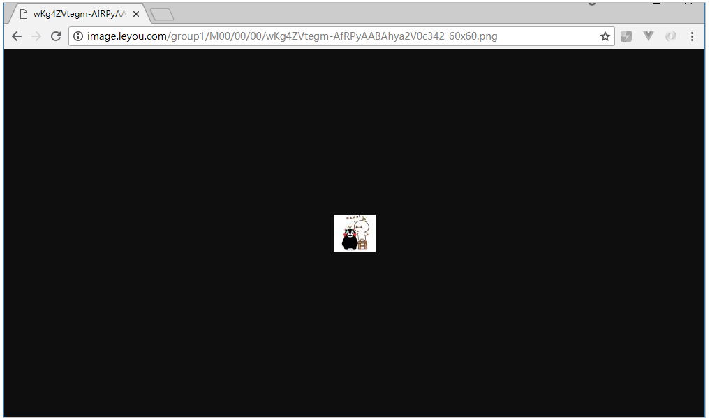
改造上传逻辑
@Service
public class UploadService {
@Autowired
private FastFileStorageClient storageClient;
private static final List<String> CONTENT_TYPES = Arrays.asList("image/jpeg", "image/gif");
private static final Logger LOGGER = LoggerFactory.getLogger(UploadService.class);
public String upload(MultipartFile file) {
String originalFilename = file.getOriginalFilename();
// 校验文件的类型
String contentType = file.getContentType();
if (!CONTENT_TYPES.contains(contentType)){
// 文件类型不合法，直接返回null
LOGGER.info("文件类型不合法：{}", originalFilename);
return null;
}
try {
// 校验文件的内容
BufferedImage bufferedImage = ImageIO.read(file.getInputStream());
if (bufferedImage == null){
LOGGER.info("文件内容不合法：{}", originalFilename);
return null;
}
// 保存到服务器
// file.transferTo(new File("C:\\leyou\\images\\" + originalFilename));
String ext = StringUtils.substringAfterLast(originalFilename, ".");
StorePath storePath = this.storageClient.uploadFile(file.getInputStream(), file.getSize(), ext, null);
// 生成url地址，返回
return "http://image.leyou.com/" + storePath.getFullPath();
} catch (IOException e) {
LOGGER.info("服务器内部错误：{}", originalFilename);
e.printStackTrace();
}
return null;
}
}只需要把原来保存文件的逻辑去掉，然后上传到FastDFS即可。
测试
通过RestClient测试：
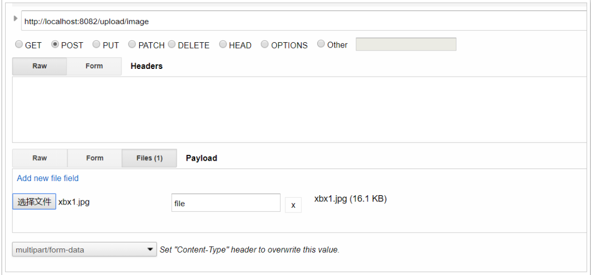
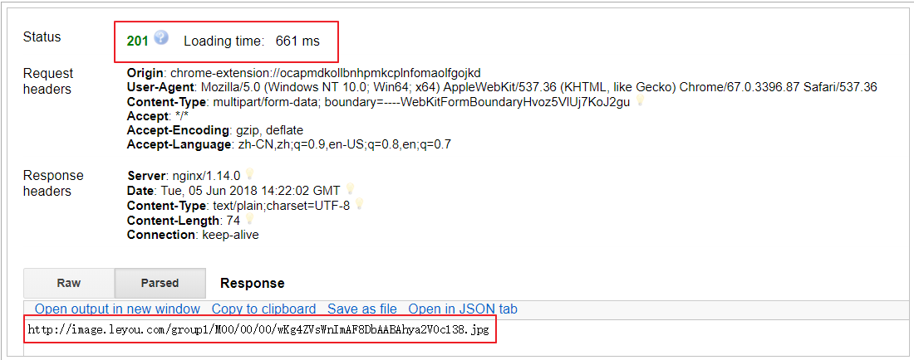
页面测试上传
发现上传成功：
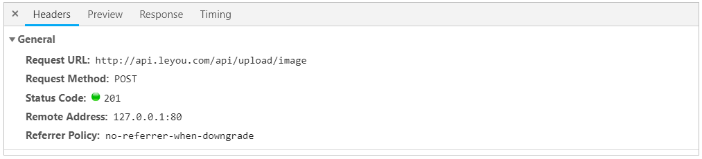
附：FastDFS 配置文件详解
首先是 tracker.conf
# is this config file disabled
# false for enabled
# true for disabled
disabled=false
# 这个配置文件是否不生效,呵呵(改成是否生效是不是会让人感觉好点呢?) false 为生效(否则不生效) true反之
# bind an address of this host
# empty for bind all addresses of this host
bind_addr=
# 是否绑定IP,
# bind_addr= 后面为绑定的IP地址 (常用于服务器有多个IP但只希望一个IP提供服务)。如果不填则表示所有的(一般不填就OK),相信较熟练的SA都常用到类似功能,很多系统和应用都有
# the tracker server port
port=22122
# 提供服务的端口,不作过多解释了
# connect timeout in seconds
# default value is 30s
connect_timeout=30
#连接超时时间，针对socket套接字函数connect
# network timeout in seconds
network_timeout=60
# tracker server的网络超时，单位为秒。发送或接收数据时，如果在超时时间后还不能发送或接收数据，则本次网络通信失败。
# the base path to store data and log files
base_path=/home/yuqing/fastdfs
# base_path 目录地址(根目录必须存在,子目录会自动创建)
# 附目录说明:
tracker server目录及文件结构：
${base_path}
|__data
| |__storage_groups.dat：存储分组信息
| |__storage_servers.dat：存储服务器列表
|__logs
|__trackerd.log：tracker server日志文件
数据文件storage_groups.dat和storage_servers.dat中的记录之间以换行符（\n）分隔，字段之间以西文逗号（,）分隔。
storage_groups.dat中的字段依次为：
1. group_name：组名
2. storage_port：storage server端口号
storage_servers.dat中记录storage server相关信息，字段依次为：
1. group_name：所属组名
2. ip_addr：ip地址
3. status：状态
4. sync_src_ip_addr：向该storage server同步已有数据文件的源服务器
5. sync_until_timestamp：同步已有数据文件的截至时间（UNIX时间戳）
6. stat.total_upload_count：上传文件次数
7. stat.success_upload_count：成功上传文件次数
8. stat.total_set_meta_count：更改meta data次数
9. stat.success_set_meta_count：成功更改meta data次数
10. stat.total_delete_count：删除文件次数
11. stat.success_delete_count：成功删除文件次数
12. stat.total_download_count：下载文件次数
13. stat.success_download_count：成功下载文件次数
14. stat.total_get_meta_count：获取meta data次数
15. stat.success_get_meta_count：成功获取meta data次数
16. stat.last_source_update：最近一次源头更新时间（更新操作来自客户端）
17. stat.last_sync_update：最近一次同步更新时间（更新操作来自其他storage server的同步）
# max concurrent connections this server supported
# max_connections worker threads start when this service startup
max_connections=256
# 系统提供服务时的最大连接数。对于V1.x，因一个连接由一个线程服务，也就是工作线程数。
# 对于V2.x，最大连接数和工作线程数没有任何关系
# work thread count, should <= max_connections
# default value is 4
# since V2.00
# V2.0引入的这个参数，工作线程数，通常设置为CPU数
work_threads=4
# the method of selecting group to upload files
# 0: round robin
# 1: specify group
# 2: load balance, select the max free space group to upload file
store_lookup=2
# 上传组(卷) 的方式 0:轮询方式 1: 指定组 2: 平衡负载(选择最大剩余空间的组(卷)上传)
# 这里如果在应用层指定了上传到一个固定组,那么这个参数被绕过
# which group to upload file
# when store_lookup set to 1, must set store_group to the group name
store_group=group2
# 当上一个参数设定为1 时 (store_lookup=1，即指定组名时)，必须设置本参数为系统中存在的一个组名。如果选择其他的上传方式，这个参数就没有效了。
# which storage server to upload file
# 0: round robin (default)
# 1: the first server order by ip address
# 2: the first server order by priority (the minimal)
store_server=0
# 选择哪个storage server 进行上传操作(一个文件被上传后，这个storage server就相当于这个文件的storage server源，会对同组的storage server推送这个文件达到同步效果)
# 0: 轮询方式
# 1: 根据ip 地址进行排序选择第一个服务器（IP地址最小者）
# 2: 根据优先级进行排序（上传优先级由storage server来设置，参数名为upload_priority）
# which path(means disk or mount point) of the storage server to upload file
# 0: round robin
# 2: load balance, select the max free space path to upload file
store_path=0
# 选择storage server 中的哪个目录进行上传。storage server可以有多个存放文件的base path（可以理解为多个磁盘）。
# 0: 轮流方式，多个目录依次存放文件
# 2: 选择剩余空间最大的目录存放文件（注意：剩余磁盘空间是动态的，因此存储到的目录或磁盘可能也是变化的）
# which storage server to download file
# 0: round robin (default)
# 1: the source storage server which the current file uploaded to
download_server=0
# 选择哪个 storage server 作为下载服务器
# 0: 轮询方式，可以下载当前文件的任一storage server
# 1: 哪个为源storage server 就用哪一个 (前面说过了这个storage server源 是怎样产生的) 就是之前上传到哪个storage server服务器就是哪个了
# reserved storage space for system or other applications.
# if the free(available) space of any stoarge server in
# a group <= reserved_storage_space,
# no file can be uploaded to this group.
# bytes unit can be one of follows:
### G or g for gigabyte(GB)
### M or m for megabyte(MB)
### K or k for kilobyte(KB)
### no unit for byte(B)
### XX.XX% as ratio such as reserved_storage_space = 10%
reserved_storage_space = 10%
# storage server 上保留的空间，保证系统或其他应用需求空间。可以用绝对值或者百分比（V4开始支持百分比方式）。
#(指出 如果同组的服务器的硬盘大小一样,以最小的为准,也就是只要同组中有一台服务器达到这个标准了,这个标准就生效,原因就是因为他们进行备份)
#standard log level as syslog, case insensitive, value list:
### emerg for emergency
### alert
### crit for critical
### error
### warn for warning
### notice
### info
### debug
log_level=info
# 选择日志级别(日志写在哪?看前面的说明了,有目录介绍哦 呵呵)
#unix group name to run this program,
#not set (empty) means run by the group of current user
run_by_group=
# 操作系统运行FastDFS的用户组 (不填 就是当前用户组,哪个启动进程就是哪个)
#unix username to run this program,
#not set (empty) means run by current user
run_by_user=
# 操作系统运行FastDFS的用户 (不填 就是当前用户,哪个启动进程就是哪个)
# allow_hosts can ocur more than once, host can be hostname or ip address,
# "*" means match all ip addresses, can use range like this: 10.0.1.[1-15,20] or
# host[01-08,20-25].domain.com, for example:
# allow_hosts=10.0.1.[1-15,20]
# allow_hosts=host[01-08,20-25].domain.com
allow_hosts=*
# 可以连接到此 tracker server 的ip范围（对所有类型的连接都有影响，包括客户端，storage server）
# sync log buff to disk every interval seconds
# default value is 10 seconds
sync_log_buff_interval = 10
# 同步或刷新日志信息到硬盘的时间间隔，单位为秒
# 注意：tracker server 的日志不是时时写硬盘的，而是先写内存。
# check storage server alive interval
check_active_interval = 120
# 检测 storage server 存活的时间隔，单位为秒。
# storage server定期向tracker server 发心跳，如果tracker server在一个check_active_interval内还没有收到storage server的一次心跳，那边将认为该storage server已经下线。所以本参数值必须大于storage server配置的心跳时间间隔。通常配置为storage server心跳时间间隔的2倍或3倍。
# thread stack size, should > 512KB
# default value is 1MB
thread_stack_size=1MB
# 线程栈的大小。FastDFS server端采用了线程方式。更正一下，tracker server线程栈不应小于64KB，不是512KB。
# 线程栈越大，一个线程占用的系统资源就越多。如果要启动更多的线程（V1.x对应的参数为max_connections，
V2.0为work_threads），可以适当降低本参数值。
# auto adjust when the ip address of the storage server changed
# default value is true
storage_ip_changed_auto_adjust=true
# 这个参数控制当storage server IP地址改变时，集群是否自动调整。注：只有在storage server进程重启时才完成自动调整。
# storage sync file max delay seconds
# default value is 86400 seconds (one day)
# since V2.00
storage_sync_file_max_delay = 86400
# V2.0引入的参数。存储服务器之间同步文件的最大延迟时间，缺省为1天。根据实际情况进行调整
# 注：本参数并不影响文件同步过程。本参数仅在下载文件时，判断文件是否已经被同步完成的一个阀值（经验值）
# the max time of storage sync a file
# default value is 300 seconds
# since V2.00
storage_sync_file_max_time = 300
# V2.0引入的参数。存储服务器同步一个文件需要消耗的最大时间，缺省为300s，即5分钟。
# 注：本参数并不影响文件同步过程。本参数仅在下载文件时，作为判断当前文件是否被同步完成的一个阀值（经验值）
# if use a trunk file to store several small files
# default value is false
# since V3.00
use_trunk_file = false
# V3.0引入的参数。是否使用小文件合并存储特性，缺省是关闭的。
# the min slot size, should <= 4KB
# default value is 256 bytes
# since V3.00
slot_min_size = 256
# V3.0引入的参数。
# trunk file分配的最小字节数。比如文件只有16个字节，系统也会分配slot_min_size个字节。
# the max slot size, should > slot_min_size
# store the upload file to trunk file when it's size <= this value
# default value is 16MB
# since V3.00
slot_max_size = 16MB
# V3.0引入的参数。
# 只有文件大小<=这个参数值的文件，才会合并存储。如果一个文件的大小大于这个参数值，将直接保存到一个文件中（即不采用合并存储方式）。
# the trunk file size, should >= 4MB
# default value is 64MB
# since V3.00
trunk_file_size = 64MB
# V3.0引入的参数。
# 合并存储的trunk file大小，至少4MB，缺省值是64MB。不建议设置得过大。
# if create trunk file advancely
# default value is false
trunk_create_file_advance = false
# 是否提前创建trunk file。只有当这个参数为true，下面3个以trunk_create_file_打头的参数才有效。
# the time base to create trunk file
# the time format: HH:MM
# default value is 02:00
trunk_create_file_time_base = 02:00
# 提前创建trunk file的起始时间点（基准时间），02:00表示第一次创建的时间点是凌晨2点。
# the interval of create trunk file, unit: second
# default value is 38400 (one day)
trunk_create_file_interval = 86400
# 创建trunk file的时间间隔，单位为秒。如果每天只提前创建一次，则设置为86400
# the threshold to create trunk file
# when the free trunk file size less than the threshold, will create
# the trunk files
# default value is 0
trunk_create_file_space_threshold = 20G
# 提前创建trunk file时，需要达到的空闲trunk大小
# 比如本参数为20G，而当前空闲trunk为4GB，那么只需要创建16GB的trunk file即可。
# if check trunk space occupying when loading trunk free spaces
# the occupied spaces will be ignored
# default value is false
# since V3.09
# NOTICE: set this parameter to true will slow the loading of trunk spaces
# when startup. you should set this parameter to true when neccessary.
trunk_init_check_occupying = false
#trunk初始化时，是否检查可用空间是否被占用
# if ignore storage_trunk.dat, reload from trunk binlog
# default value is false
# since V3.10
# set to true once for version upgrade when your version less than V3.10
trunk_init_reload_from_binlog = false
# 是否无条件从trunk binlog中加载trunk可用空间信息
# FastDFS缺省是从快照文件storage_trunk.dat中加载trunk可用空间，
# 该文件的第一行记录的是trunk binlog的offset，然后从binlog的offset开始加载
# if use storage ID instead of IP address
# default value is false
# since V4.00
use_storage_id = false
# 是否使用server ID作为storage server标识
# specify storage ids filename, can use relative or absolute path
# since V4.00
storage_ids_filename = storage_ids.conf
# use_storage_id 设置为true，才需要设置本参数
# 在文件中设置组名、server ID和对应的IP地址，参见源码目录下的配置示例：conf/storage_ids.conf
# if store slave file use symbol link
# default value is false
# since V4.01
store_slave_file_use_link = false
# 存储从文件是否采用symbol link（符号链接）方式
# 如果设置为true，一个从文件将占用两个文件：原始文件及指向它的符号链接。
# if rotate the error log every day
# default value is false
# since V4.02
rotate_error_log = false
# 是否定期轮转error log，目前仅支持一天轮转一次
# rotate error log time base, time format: Hour:Minute
# Hour from 0 to 23, Minute from 0 to 59
# default value is 00:00
# since V4.02
error_log_rotate_time=00:00
# error log定期轮转的时间点，只有当rotate_error_log设置为true时有效
# rotate error log when the log file exceeds this size
# 0 means never rotates log file by log file size
# default value is 0
# since V4.02
rotate_error_log_size = 0
# error log按大小轮转
# 设置为0表示不按文件大小轮转，否则当error log达到该大小，就会轮转到新文件中
# 以下是关于http的设置了 默认编译是不生效的 要求更改 #WITH_HTTPD=1 将 注释#去掉 再编译
# 关于http的应用 说实话 不是很了解 没有见到 相关说明 ,望 版主可以完善一下 以下是字面解释了
#HTTP settings
http.disabled=false # HTTP服务是否不生效
http.server_port=8080 # HTTP服务端口
#use "#include" directive to include http other settiongs
##include http.conf # 如果加载http.conf的配置文件 去掉第一个#
哈哈 完成了一个 下面是 storage.conf
# is this config file disabled
# false for enabled
# true for disabled
disabled=false
#同上文了 就不多说了
# the name of the group this storage server belongs to
group_name=group1
# 指定 此 storage server 所在 组(卷)
# bind an address of this host
# empty for bind all addresses of this host
bind_addr=
# 同上文
# if bind an address of this host when connect to other servers
# (this storage server as a client)
# true for binding the address configed by above parameter: "bind_addr"
# false for binding any address of this host
client_bind=true
# bind_addr通常是针对server的。当指定bind_addr时，本参数才有效。
# 本storage server作为client连接其他服务器（如tracker server、其他storage server），是否绑定bind_addr。
# the storage server port
port=23000
# storage server服务端口
# connect timeout in seconds
# default value is 30s
connect_timeout=30
#连接超时时间，针对socket套接字函数connect
# network timeout in seconds
network_timeout=60
# storage server 网络超时时间，单位为秒。发送或接收数据时，如果在超时时间后还不能发送或接收数据，则本次网络通信失败。
# heart beat interval in seconds
heart_beat_interval=30
# 心跳间隔时间，单位为秒 (这里是指主动向tracker server 发送心跳)
# disk usage report interval in seconds
stat_report_interval=60
# storage server向tracker server报告磁盘剩余空间的时间间隔，单位为秒。
# the base path to store data and log files
base_path=/home/yuqing/fastdfs
# base_path 目录地址,根目录必须存在 子目录会自动生成 (注 :这里不是上传的文件存放的地址,之前是的,在某个版本后更改了)
# 目录结构 因为 版主没有更新到 论谈上 这里就不发了 大家可以看一下置顶贴:
# max concurrent connections server supported
# max_connections worker threads start when this service startup
max_connections=256
# 同上文
# work thread count, should <= max_connections
# default value is 4
# since V2.00
# V2.0引入的这个参数，工作线程数，通常设置为CPU数
work_threads=4
# the buff size to recv / send data
# default value is 64KB
# since V2.00
buff_size = 256KB
# V2.0引入本参数。设置队列结点的buffer大小。工作队列消耗的内存大小 = buff_size * max_connections
# 设置得大一些，系统整体性能会有所提升。
# 消耗的内存请不要超过系统物理内存大小。另外，对于32位系统，请注意使用到的内存不要超过3GB
# if read / write file directly
# if set to true, open file will add the O_DIRECT flag to avoid file caching
# by the file system. be careful to set this parameter.
# default value is false
disk_rw_direct = false
# V2.09引入本参数。设置为true，表示不使用操作系统的文件内容缓冲特性。
# 如果文件数量很多，且访问很分散，可以考虑将本参数设置为true
# if disk read / write separated
## false for mixed read and write
## true for separated read and write
# default value is true
# since V2.00
disk_rw_separated = true
# V2.0引入本参数。磁盘IO读写是否分离，缺省是分离的。
# disk reader thread count per store base path
# for mixed read / write, this parameter can be 0
# default value is 1
# since V2.00
disk_reader_threads = 1
# V2.0引入本参数。针对单个存储路径的读线程数，缺省值为1。
# 读写分离时，系统中的读线程数 = disk_reader_threads * store_path_count
# 读写混合时，系统中的读写线程数 = (disk_reader_threads + disk_writer_threads) * store_path_count
# disk writer thread count per store base path
# for mixed read / write, this parameter can be 0
# default value is 1
# since V2.00
disk_writer_threads = 1
# V2.0引入本参数。针对单个存储路径的写线程数，缺省值为1。
# 读写分离时，系统中的写线程数 = disk_writer_threads * store_path_count
# 读写混合时，系统中的读写线程数 = (disk_reader_threads + disk_writer_threads) * store_path_count
# when no entry to sync, try read binlog again after X milliseconds
# 0 for try again immediately (not need to wait)
sync_wait_msec=200
# 同步文件时，如果从binlog中没有读到要同步的文件，休眠N毫秒后重新读取。0表示不休眠，立即再次尝试读取。
# 出于CPU消耗考虑，不建议设置为0。如何希望同步尽可能快一些，可以将本参数设置得小一些，比如设置为10ms
# after sync a file, usleep milliseconds
# 0 for sync successively (never call usleep)
sync_interval=0
# 同步上一个文件后，再同步下一个文件的时间间隔，单位为毫秒，0表示不休眠，直接同步下一个文件。
# sync start time of a day, time format: Hour:Minute
# Hour from 0 to 23, Minute from 0 to 59
sync_start_time=00:00
# sync end time of a day, time format: Hour:Minute
# Hour from 0 to 23, Minute from 0 to 59
sync_end_time=23:59
# 上面二个一起解释。允许系统同步的时间段 (默认是全天) 。一般用于避免高峰同步产生一些问题而设定，相信sa都会明白
# write to the mark file after sync N files
# default value is 500
write_mark_file_freq=500
# 同步完N个文件后，把storage的mark文件同步到磁盘
# 注：如果mark文件内容没有变化，则不会同步
# path(disk or mount point) count, default value is 1
store_path_count=1
# 存放文件时storage server支持多个路径（例如磁盘）。这里配置存放文件的基路径数目，通常只配一个目录。
# store_path#, based 0, if store_path0 not exists, it's value is base_path
# the paths must be exist
store_path0=/home/yuqing/fastdfs
#store_path1=/home/yuqing/fastdfs2
# 逐一配置store_path个路径，索引号基于0。注意配置方法后面有0,1,2 ......，需要配置0到store_path - 1。
# 如果不配置base_path0，那边它就和base_path对应的路径一样。
# subdir_count * subdir_count directories will be auto created under each
# store_path (disk), value can be 1 to 256, default value is 256
subdir_count_per_path=256
# FastDFS存储文件时，采用了两级目录。这里配置存放文件的目录个数 (系统的存储机制,大家看看文件存储的目录就知道了)
# 如果本参数只为N（如：256），那么storage server在初次运行时，会自动创建 N * N 个存放文件的子目录。
# tracker_server can ocur more than once, and tracker_server format is
# "host:port", host can be hostname or ip address
tracker_server=10.62.164.84:22122
tracker_server=10.62.245.170:22122
# tracker_server 的列表 要写端口的哦 (再次提醒是主动连接tracker_server )
# 有多个tracker server时，每个tracker server写一行
#standard log level as syslog, case insensitive, value list:
### emerg for emergency
### alert
### crit for critical
### error
### warn for warning
### notice
### info
### debug
log_level=info
# 日志级别不多说
#unix group name to run this program,
#not set (empty) means run by the group of current user
run_by_group=
# 同上文了
#unix username to run this program,
#not set (empty) means run by current user
run_by_user=
# 同上文了 (提醒注意权限 如果和 webserver不搭 可以会产生错误 哦)
# allow_hosts can ocur more than once, host can be hostname or ip address,
# "*" means match all ip addresses, can use range like this: 10.0.1.[1-15,20] or
# host[01-08,20-25].domain.com, for example:
# allow_hosts=10.0.1.[1-15,20]
# allow_hosts=host[01-08,20-25].domain.com
allow_hosts=*
# 允许连接本storage server的IP地址列表 （不包括自带HTTP服务的所有连接）
# 可以配置多行，每行都会起作用
# the mode of the files distributed to the data path
# 0: round robin(default)
# 1: random, distributted by hash code
file_distribute_path_mode=0
# 文件在data目录下分散存储策略。
# 0: 轮流存放，在一个目录下存储设置的文件数后（参数file_distribute_rotate_count中设置文件数），使用下一个目录进行存储。
# 1: 随机存储，根据文件名对应的hash code来分散存储。
# valid when file_distribute_to_path is set to 0 (round robin),
# when the written file count reaches this number, then rotate to next path
# default value is 100
file_distribute_rotate_count=100
# 当上面的参数file_distribute_path_mode配置为0（轮流存放方式）时，本参数有效。
# 当一个目录下的文件存放的文件数达到本参数值时，后续上传的文件存储到下一个目录中。
# call fsync to disk when write big file
# 0: never call fsync
# other: call fsync when written bytes >= this bytes
# default value is 0 (never call fsync)
fsync_after_written_bytes=0
# 当写入大文件时，每写入N个字节，调用一次系统函数fsync将内容强行同步到硬盘。0表示从不调用fsync
# sync log buff to disk every interval seconds
# default value is 10 seconds
sync_log_buff_interval=10
# 同步或刷新日志信息到硬盘的时间间隔，单位为秒
# 注意：storage server 的日志信息不是时时写硬盘的，而是先写内存。
# sync binlog buff / cache to disk every interval seconds
# this parameter is valid when write_to_binlog set to 1
# default value is 60 seconds
sync_binlog_buff_interval=60
# 同步binglog（更新操作日志）到硬盘的时间间隔，单位为秒
# 本参数会影响新上传文件同步延迟时间
# sync storage stat info to disk every interval seconds
# default value is 300 seconds
sync_stat_file_interval=300
# 把storage的stat文件同步到磁盘的时间间隔，单位为秒。
# 注：如果stat文件内容没有变化，不会进行同步
# thread stack size, should >= 512KB
# default value is 512KB
thread_stack_size=512KB
# 线程栈的大小。FastDFS server端采用了线程方式。
# 对于V1.x，storage server线程栈不应小于512KB；对于V2.0，线程栈大于等于128KB即可。
# 线程栈越大，一个线程占用的系统资源就越多。
# 对于V1.x，如果要启动更多的线程（max_connections），可以适当降低本参数值。
# the priority as a source server for uploading file.
# the lower this value, the higher its uploading priority.
# default value is 10
upload_priority=10
# 本storage server作为源服务器，上传文件的优先级，可以为负数。值越小，优先级越高。这里就和 tracker.conf 中store_server= 2时的配置相对应了
# if check file duplicate, when set to true, use FastDHT to store file indexes
# 1 or yes: need check
# 0 or no: do not check
# default value is 0
check_file_duplicate=0
# 是否检测上传文件已经存在。如果已经存在，则不存在文件内容，建立一个符号链接以节省磁盘空间。
# 这个应用要配合FastDHT 使用，所以打开前要先安装FastDHT
# 1或yes 是检测，0或no 是不检测
# file signature method for check file duplicate
## hash: four 32 bits hash code
## md5: MD5 signature
# default value is hash
# since V4.01
file_signature_method=hash
# 文件去重时，文件内容的签名方式：
## hash： 4个hash code
## md5：MD5
# namespace for storing file indexes (key-value pairs)
# this item must be set when check_file_duplicate is true / on
key_namespace=FastDFS
# 当上个参数设定为1 或 yes时 (true/on也是可以的) ， 在FastDHT中的命名空间。
# set keep_alive to 1 to enable persistent connection with FastDHT servers
# default value is 0 (short connection)
keep_alive=0
# 与FastDHT servers 的连接方式 (是否为持久连接) ，默认是0（短连接方式）。可以考虑使用长连接，这要看FastDHT server的连接数是否够用。
# 下面是关于FastDHT servers 的设定 需要对FastDHT servers 有所了解,这里只说字面意思了
# you can use "#include filename" (not include double quotes) directive to
# load FastDHT server list, when the filename is a relative path such as
# pure filename, the base path is the base path of current/this config file.
# must set FastDHT server list when check_file_duplicate is true / on
# please see INSTALL of FastDHT for detail
##include /home/yuqing/fastdht/conf/fdht_servers.conf
# 可以通过 #include filename 方式来加载 FastDHT servers 的配置，装上FastDHT就知道该如何配置啦。
# 同样要求 check_file_duplicate=1 时才有用，不然系统会忽略
# fdht_servers.conf 记载的是 FastDHT servers 列表
# if log to access log
# default value is false
# since V4.00
use_access_log = false
# 是否将文件操作记录到access log
# if rotate the access log every day
# default value is false
# since V4.00
rotate_access_log = false
# 是否定期轮转access log，目前仅支持一天轮转一次
# rotate access log time base, time format: Hour:Minute
# Hour from 0 to 23, Minute from 0 to 59
# default value is 00:00
# since V4.00
access_log_rotate_time=00:00
# access log定期轮转的时间点，只有当rotate_access_log设置为true时有效
# if rotate the error log every day
# default value is false
# since V4.02
rotate_error_log = false
# 是否定期轮转error log，目前仅支持一天轮转一次
# rotate error log time base, time format: Hour:Minute
# Hour from 0 to 23, Minute from 0 to 59
# default value is 00:00
# since V4.02
error_log_rotate_time=00:00
# error log定期轮转的时间点，只有当rotate_error_log设置为true时有效
# rotate access log when the log file exceeds this size
# 0 means never rotates log file by log file size
# default value is 0
# since V4.02
rotate_access_log_size = 0
# access log按文件大小轮转
# 设置为0表示不按文件大小轮转，否则当access log达到该大小，就会轮转到新文件中
# rotate error log when the log file exceeds this size
# 0 means never rotates log file by log file size
# default value is 0
# since V4.02
rotate_error_log_size = 0
# error log按文件大小轮转
# 设置为0表示不按文件大小轮转，否则当error log达到该大小，就会轮转到新文件中
# if skip the invalid record when sync file
# default value is false
# since V4.02
file_sync_skip_invalid_record=false
# 文件同步的时候，是否忽略无效的binlog记录
下面是http的配置了。如果系统较大，这个服务有可能支持不了，可以自行换一个webserver，我喜欢lighttpd，当然ng也很好了。具体不说明了。相应这一块的说明大家都懂，不明白见上文。
#HTTP settings
http.disabled=false
# the port of the web server on this storage server
http.server_port=8888
http.trunk_size=256KB
# http.trunk_size表示读取文件内容的buffer大小（一次读取的文件内容大小），也就是回复给HTTP client的块大小。
# use the ip address of this storage server if domain_name is empty,
# else this domain name will ocur in the url redirected by the tracker server
http.domain_name=
# storage server上web server域名，通常仅针对单独部署的web server。这样URL中就可以通过域名方式来访问storage server上的文件了，
# 这个参数为空就是IP地址的方式。
#use "#include" directive to include HTTP other settiongs
##include http.conf